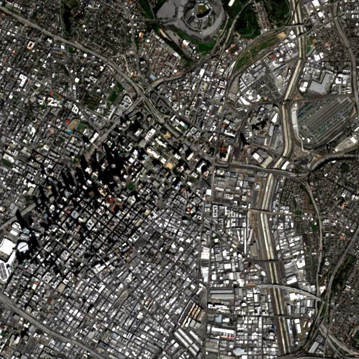

Benchmark / Near-lossless / s2-l1c-10m-4 / s2-l1c-10m-4-08
s2-l1c-10m-4-08
los-angeles · 2023-01-23 · sample details

Metadata
| id | s2-l1c-10m-4-08 |
|---|---|
| source | COPERNICUS/S2 (Sentinel-2 MSI Level-1C) |
| asset | COPERNICUS/S2/20230123T183651_20230123T183718_T11SLT |
| crs | EPSG:32611 |
| transform | 382710.0 10.0 0.0 3771180.0 0.0 -10.0 |
| datetime_start | 2023-01-23T18:44:59.489Z |
| datetime_end | 2023-01-23T18:44:59.489Z |
| bands | B2|B3|B4|B8 |
| shape | 4x512x512 |
| dtype | uint16 |
| unit | DN |
| scale | 1 |
| offset | 0 |
| nodata | 0 |
| input_sha256 | 3dd7c1303b4036d965c31f61dc7cb94da12e1173811483bad54e9437122b4779 |
| site | los-angeles |
| regime | built |
| lon | -118.243 |
| lat | 34.052 |
| spacecraft | Sentinel-2A |
| mgrs_tile | 11SLT |
| processing_baseline | 05.09 |
| radio_add_offset | -1000|-1000|-1000|-1000 |